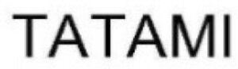

Trade Mark Journal No.2025/044 31 October 2025
WO0000001865865 (20)
Office of origin: Italy
Date of International Registration:14 May 2025
Date of designation in the UK:
14 May 2025

- Class 20
- Bed fittings, not of metal; furniture fittings, not of metal; door fittings, not of metal; cat trees; plate racks [furniture]; yellow amber; curtain rings; stuffed animals; bag hangers, not of metal; window openers, not of metal, non-electric; door openers, not of metal, non-electric; luggage lockers; lockers [furniture]; coatstands; curtain rods; picture frame brackets; whalebone, unworked or semi-worked; bamboo, unworked or semi-worked; barrels, not of metal; door knockers, not of metal; curtain tie-backs; casks, not of metal; identification bracelets, not of metal; dinner wagons [furniture]; bolts, not of metal; busts of wood, wax, plaster or plastic; costume stands; door bells, not of metal, non-electric; sealing caps, not of metal; trolleys [furniture]; infant walkers; plastic key cards, not encoded and not magnetic; placards of wood or plastics; birdhouses; letter boxes, not of metal or masonry; boxes of wood or plastic; tool boxes, not of metal, empty; tool chests, not of metal, empty; drawers for furniture; chests of drawers; trestles [furniture]; hinges, not of metal; plastic keys; nails, not of metal; window closers, not of metal, non-electric; bottle closures, not of metal; closures, not of metal, for containers; sash fasteners, not of metal, for windows; mobiles [decoration]; shells; containers, not of metal [storage, transport]; waste dumpsters, not of metal, other than for medical use; commemorative statuary cups of wood, wax, plaster or plastic; prize cups of wood, wax, plaster or plastic; animal horns; picture frames; horn, unworked or semi-worked; crucifixes of wood, wax, plaster or plastic, other than jewellery; covers for clothing [wardrobe]; nuts, not of metal; toilet paper dispensers, not of metal; towel dispensers, not of metal; staves of wood; fair stands [display stands]; jewellery organizer displays; newspaper display stands; labels of plastic; curtain holders, not of textile material; window fasteners, not of metal; window stops, not of metal or rubber; stair rods; door closers, not of metal, non-electric; edgings of plastic for furniture; crates; legs for furniture; coathooks, not of metal; clothes hooks, not of metal; curtain hooks; flower-stands [furniture]; rattan; coat hangers; window fittings, not of metal; bottle casings of wood; signboards of wood or plastics; mirror tiles; lecterns; scratching posts for cats; beds made from plastic, or metal, or wood; padlocks, not of metal, other than electronic; mother-of-pearl, unworked or semi-worked; tailors' dummies; door handles, not of metal; furniture made from plastic, or metal, or wood; inflatable furniture; furniture of metal; mouldings for picture frames; vice benches [furniture]; wood ribbon; straw edgings; house numbers, not of metal, non-luminous; works of art of wood, wax, plaster or plastic; wickerwork; wind chimes [decoration]; hanging closet organizers; drawer organizers; stakes, not of metal, for plants or trees; keyboards for hanging keys; furniture partitions of wood; screens for fireplaces [furniture]; screens [furniture]; dowels, not of metal; table tops; flower-pot pedestals; feet for furniture; armchairs made from plastic, or metal, or wood; knobs, not of metal; towel stands [furniture]; bottle racks; hat stands; split rings, not of metal, for keys; book rests [furniture]; umbrella stands; magazine racks; doors for furniture; standing desks; tacks, not of metal; gun racks; playpens for babies; packaging containers of plastic; furniture shelves; shelves for storage; library shelves; shelves for file cabinets; curtain rails; furniture casters, not of metal; bed casters, not of metal; curtain rollers; runners, not of metal, for sliding doors; latches, not of metal; racks [furniture]; shelving units; ladders of wood or plastics; boxes, not of metal, for dispensing paper towels; filing cabinets; writing desks; lap desks; sculptures of bone, ivory, plaster, plastic, wax or wood; chairs made from plastic, or metal, or wood; chaise longues made from plastic, or metal, or wood; seats made from plastic, or metal, or wood; seats of metal; high chairs for babies; locks, not of metal, other than electric; valet stands; sofas made from plastic, or metal, or wood; mirrors [looking glasses]; meerschaum; brackets, not of metal, for furniture; statues of wood, wax, plaster or plastic; figurines of wood, wax, plaster or plastic; display boards; indoor window blinds of woven wood; indoor window blinds [furniture]; stoppers, not of glass, metal or rubber; tortoiseshell; tables made from plastic, or metal, or wood; drafting tables; tables of metal; trolleys for computers [furniture]; embroidery frames; bamboo curtains; bead curtains for decoration; indoor window blinds of textile; freestanding partitions [furniture]; trays, not of metal; slatted indoor blinds; fans for personal use, non-electric; showcases [furniture]; silvered glass [mirrors]; animal hooves.
PEDRALI S.P.A.
Representative: Boult Wade Tennant LLP, Salisbury Square House, 8 Salisbury Square London EC4Y 8AP UNITED KINGDOM